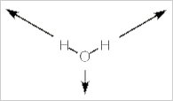
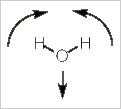
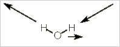

Optical Activity
Optically active organic molecules (chiral molecules) contain at least one asymmetric carbon atom known as a chiral center. Many inorganic molecules have no chiral centers and yet are optically active. These molecules are called dissymmetric, because they do have some symmetry.
Which molecules are expected to be optically active?
Molecules with no improper axis of rotation are optically active. Note that S1 = σ and S2 = i.
Which point groups have no mirror planes, centers of inversion or other improper rotations?
C1, Cn, and Dn all fit this requirement. C1 is, of course, asymmetric. It has no symmetry and is the familiar situation from organic chemistry.
L-(+)-Lactic acid (click for the image)(C3H6O3)is a chiral molecule. it is organic and small.
Octahedral metal ion complexes can be optically active, particularly when they are chelated. For example, [Co(ethylenediamine)3]3- (click for the image) has two enantiomeric forms with D3 symmetry.
If one of the ethylenediamine chelates is replaced with two chloride ions, the cis-dichlorobis(ethylenediamine)cobalt(III) ion (click for the image) has C2 symmetry and is optically active.
Back to top
Dipole Moments
A molecule will have a dipole moment (that is, it will be polar) if the bond dipole moments do not cancel each other out. So a linear molecule like CO2 has two polar bonds facing in opposite directions with the result that the molecule itself is not polar. In fact, any molecule with a center of inversion, i, cannot be polar because the bond dipole moments will cancel each other.
Likewise, a molecule with more than one Cn axis (n>1) cannot have a dipole moment. You can realize this logically because the dipole moment of the molecule cannot lie in more than one direction. PF5 is a good example where the bond dipole moments all cancel. Although it has one C3 axis, it also has 3 C2 axes.
All molecules in D point groups all have multiple C axes and therefore cannot be polar. Also, molecules with a horizontal mirror plane cannot have a dipole moment. So, what's left?
Polar molecules can be in one of these four point groups: C1, Cs, Cn, and Cnv.
Back to top
IR and Raman Spectroscopy
One of the most practical uses of point groups and group theory for the inorganic chemist in is predicting the number of infrared and Raman bands that may be expected from a molecule. Alternatively, given the IR or Raman spectrum, the symmetry of a molecule may be inferred. In both IR and Raman spectroscopy the molecule is viewed as containing moving vectors. How these vectors are affected by symmetry will provide a means to determine how many bands would be expected in these spectra.
IR spectroscopy
For IR spectroscopy, it is the vibrational motions of the atoms that are important. Actually, it is the change in the molecular dipole moment when the atoms vibrate that determines whether the vibration is or is not IR active. The question is: Does the dipole moment change in a way that corresponds with the x-, y-, or z-axis?
The mathematically-rigorous way to answer this question is to draw the vectors and then see how these transform against the several symmetry operations in the molecule's point group. The result is called the reducible representation. One can separate this into irreducible representations and compare these to the irreducible representations on a character table to determine the normal modes for the vibrations. If the normal modes correspond with the x-, y-, or z-axis then the vibration will be IR active.
Alternatively, we can stick with pictures and use some logic to realize how many IR bands a molecule will have. Let's use water, H2O, as our example. Water has three vibrational modes: a symmetric stretch, a bending mode, and an asymmetrical stretch.
Back to top
Symmetrical stretch
In this mode the dipole moment for the molecule does not change in direction, but it does change in magnitude. As the molecule stretches, the dipole moment increases. So the dipole moment changes and it does so along the z-axis. This vibration is IR active.

Bending mode
In this bending (scissoring) mode, the dipole does not change direction. It is still pointed along the z-axis, but it does change in magnitude (increasing with the bend). Thus, this mode is also IR active.

Asymmetric stretch
In this mode, both the direction and magnitude of the dipole moment are changing. The dipole moment switches from left to right rather like a windshield wiper. Unlike a windshield wiper, however, the size of the dipole moment increase to each side and decreases when in the middle.

The movement is restricted to the yz-plane of the molecule. There is no change in the x-axis. If you consider the animation closely, you will realize that there is no change in the z-axis component of the dipole. This always has the same magnitude and direction.
It is the y-axis component that is changing first to the negative, then the positive direction. Thus, this vibrational mode corresponds to the y-axis (B2 on the character table) and will be IR active.
For water, all three vibrational modes are IR active. Two transform with the z-axis and one with the y-axis.
Back to top
Raman spectroscopy
Molecular vibrations are Raman active if the polarizability tensor for the molecule changes. This is a complex idea, but basically the polarizability tensor transforms in the same way as second order functions of x, y, and z such as x2, yz, x2-y2, and so on.
Polarizability is a difficult concept to visualize. The vibrational movement of the atoms in a molecule affects the ability of the nuclei to hold their electrons. This can result in a change in the polarizability of the molecule. Once the normal vibrational modes for a molecule are determined, one can look on the character table to determine which modes might be Raman active.
Thus, for H2O, a molecule with C2v symmetry, there are three vibrational modes: 2 A1 + B1. The specific vibrational motion for these three modes can be seen in the infrared spectroscopy section. For Raman, we will refer to the C2v character table:
Character table for point group C2v
C2v |
E |
C2 (z) |
σv(xz) |
σv(yz) |
linear functions,
rotations |
quadratic
functions |
| A1 | +1 | +1 | +1 | +1 | z | x2, y2, z2 |
| A2 | +1 | +1 | -1 | -1 | Rz | xy |
| B1 | +1 | -1 | +1 | -1 | x,Ry | xz |
| B2 | +1 | -1 | -1 | +1 | y,Rx | yz |
The two A1 vibrations transform as quadratic functions and the B1 vibrational mode also transforms as a quadratic function. So, we expect three Raman bands for water.
Back to top